psiloritis

livyko

portrait

harbour
The 81 files you just sent are painted in teal, terracotta and saffron on toned paper. The system in this project is painted in lime, wine and ochre. One of them has to move, and it should be the tokens — the art is the brand. Everything below is a proposal. Pick per section and I will build the final set.
Every subject arrived in two hands. Track A is oil pastel on toned paper: soft edge, visible tooth, colour sitting in the paper. Track B is ink line with watercolour wash: hard contour, white ground, more graphic. Both are good. Mixing them in one storefront will read as two brands, so the system should commit — or commit A for landscape and B for motifs, which is my recommendation.
Eleven values taken by frequency out of twelve of the new files. This replaces tokens/colors.css wholesale. Aegean teal becomes the accent, terracotta the second voice, saffron the highlight; the ground stops being lime plaster and becomes the warm toned stock the work is actually drawn on.
Twenty-four subjects, both hands. Tell me which to keep — or say "keep the twelve strongest" and I will cut to the twelve that carry a subject at card size. My own cut list, if it helps: keep every landscape, keep portrait and hands, cut generations and beach in track A (faces go soft), cut bench (no subject at small size).


Five painted marks that do the job an icon set would do elsewhere. They are large, coloured and specific, which is exactly right for this brand. Proposal: ship all five in track B (the harder line reads at 40px, the pastel does not), and keep hoop, beads, spiral, olive from section 03 as the quiet set.
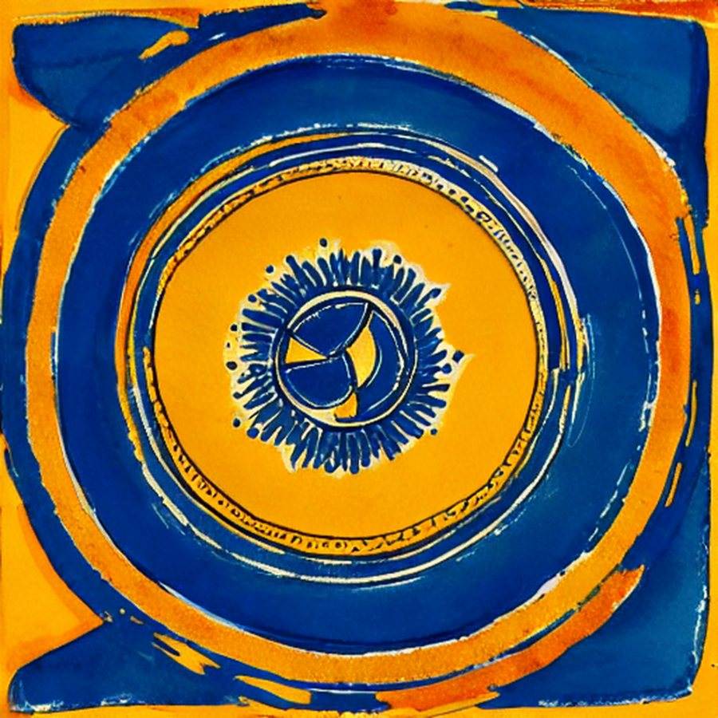
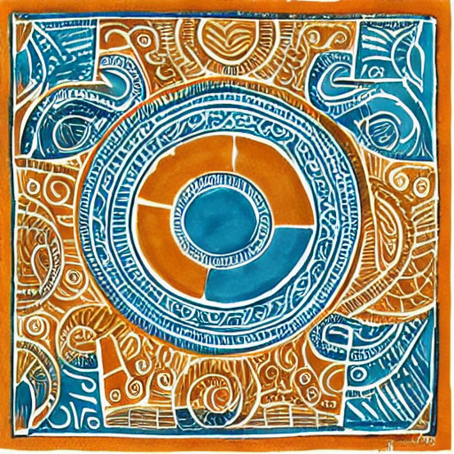
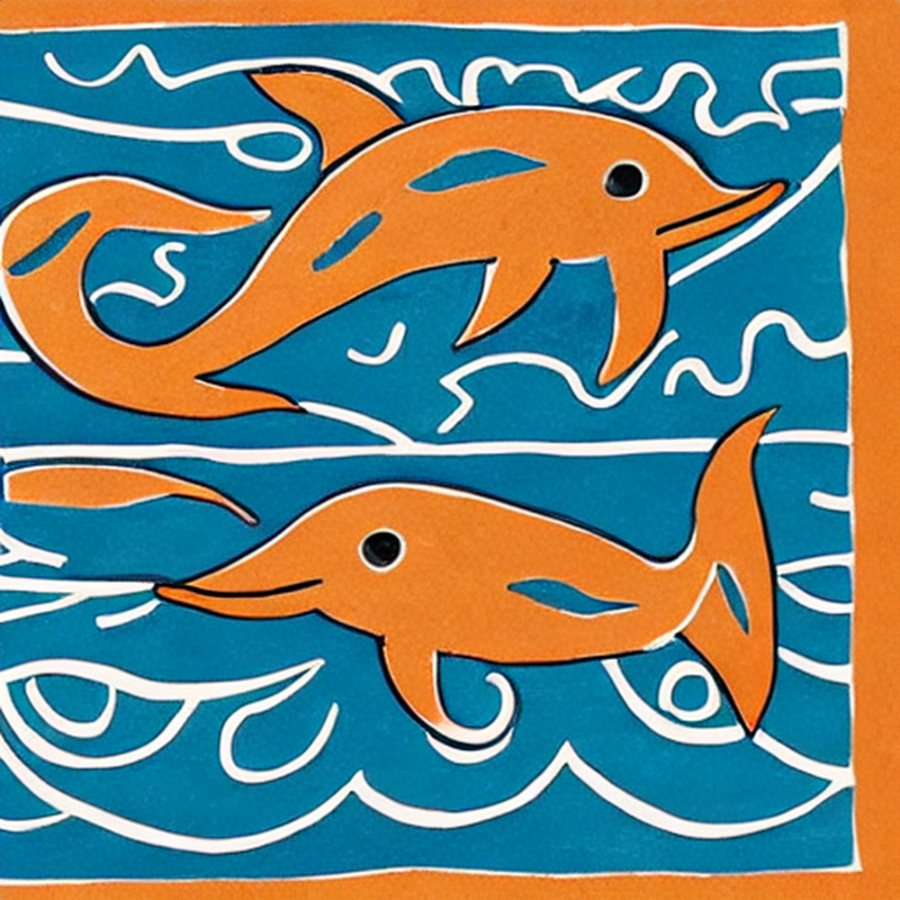
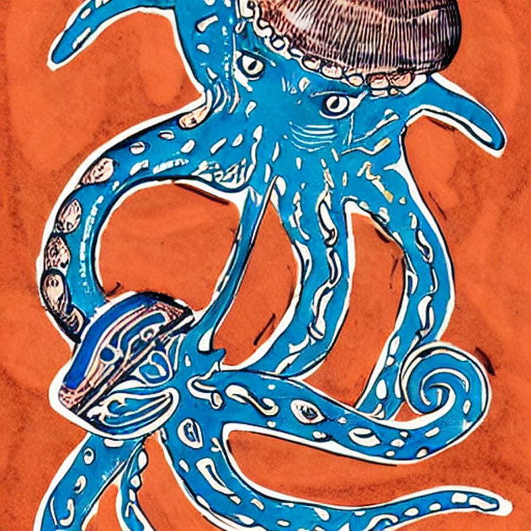
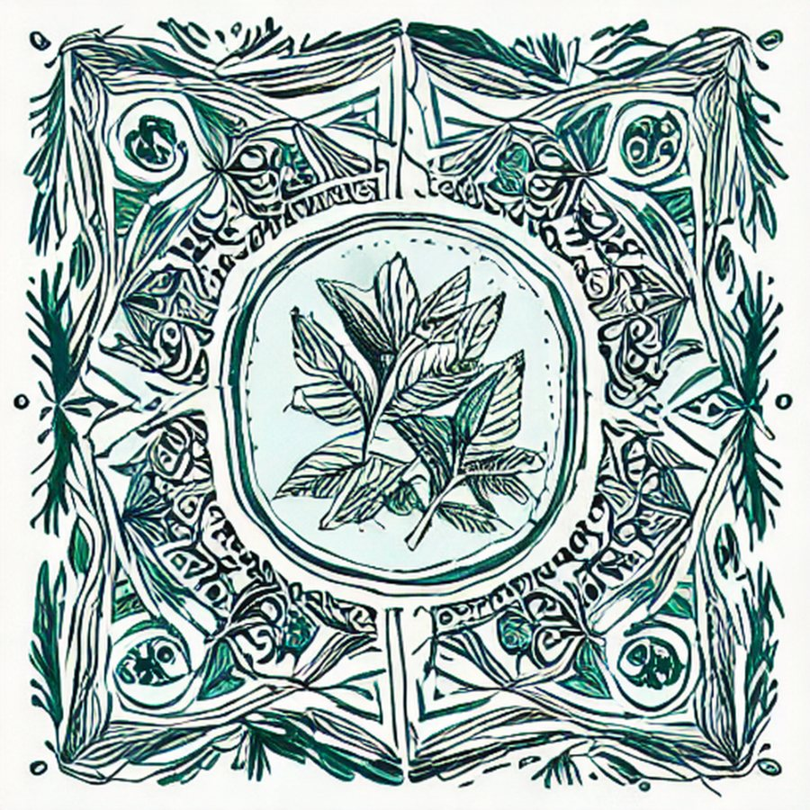
Three repeats. They are strong but loud — a pattern at full strength will eat a product photograph. Proposal: keep all three, and define three strengths in the tokens — full (packaging, a single hero band), 30% over paper (section grounds), and 8% (behind long prose). Never two patterns on one screen.
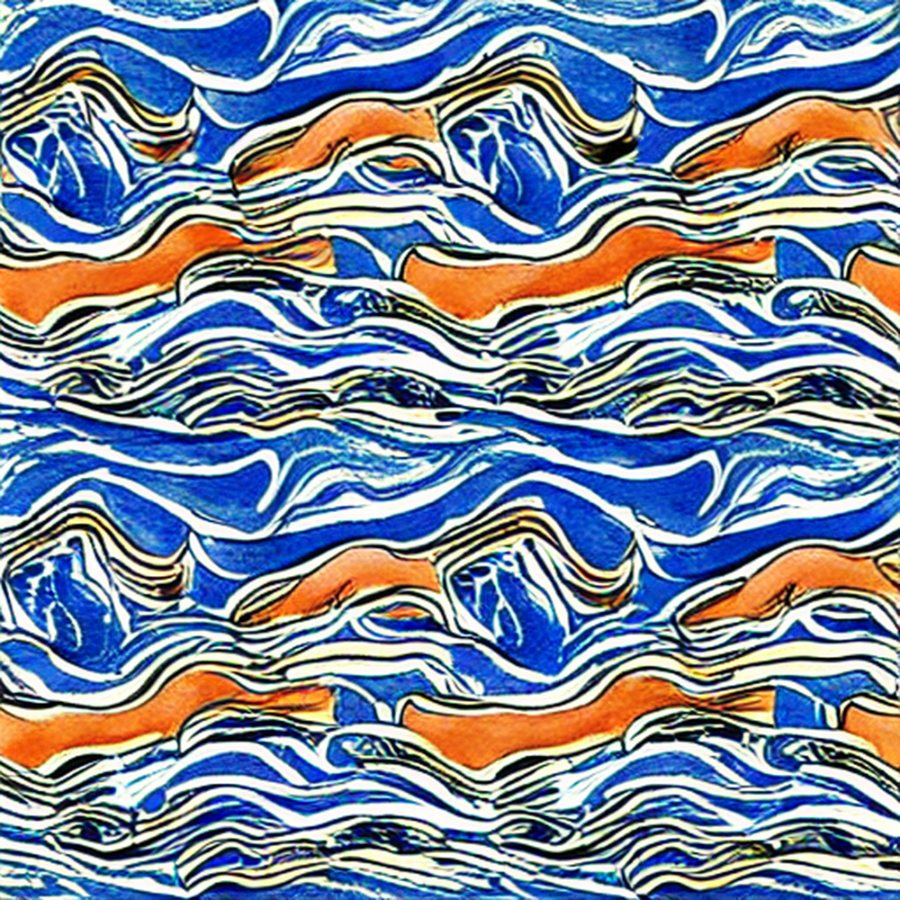
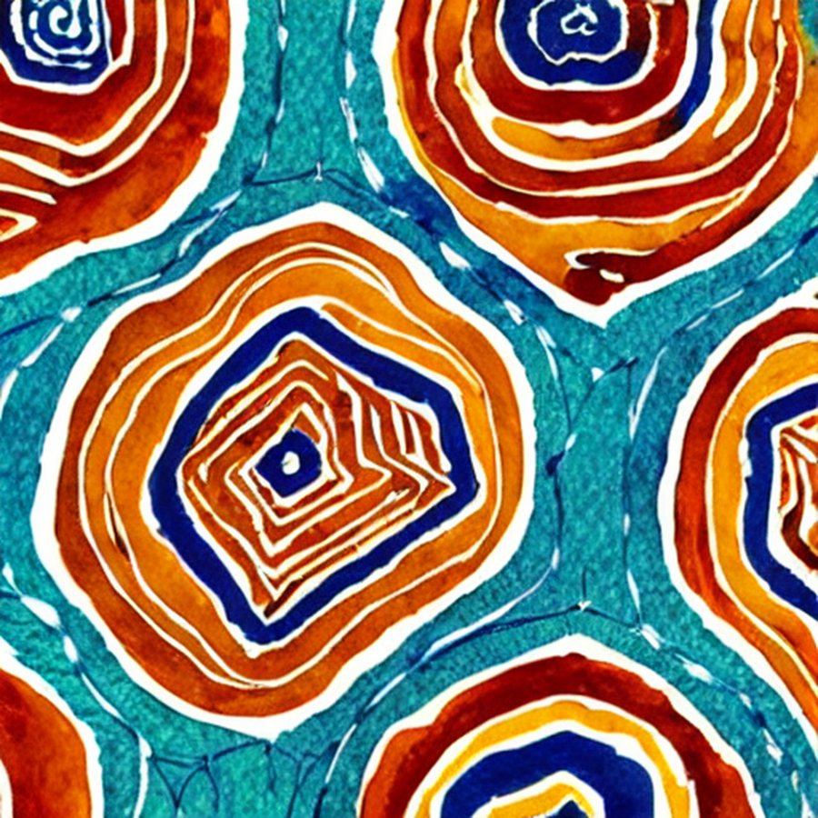
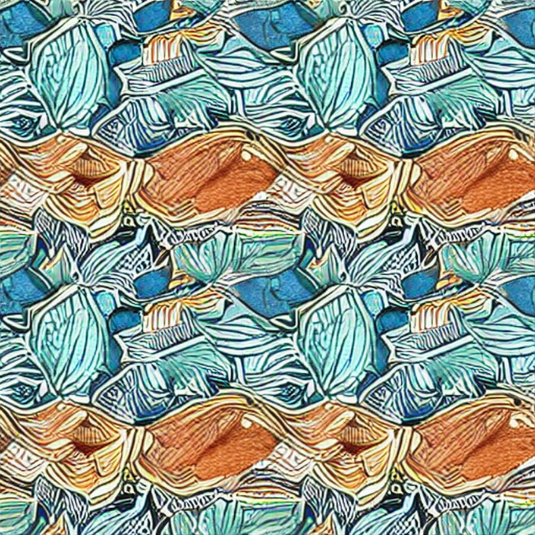
You asked for a background like the receipt sheets in the reference material: a printed form, ruled, numbered, warm. Three drafts below, drawn to the sampled palette. These are procedural drafts, not paintings — they exist to be judged and then either kept or replaced with a real scan. The three files you sent as "textures" are on the right; note that two of them are paintings rather than grounds, so they belong in section 04, not here.


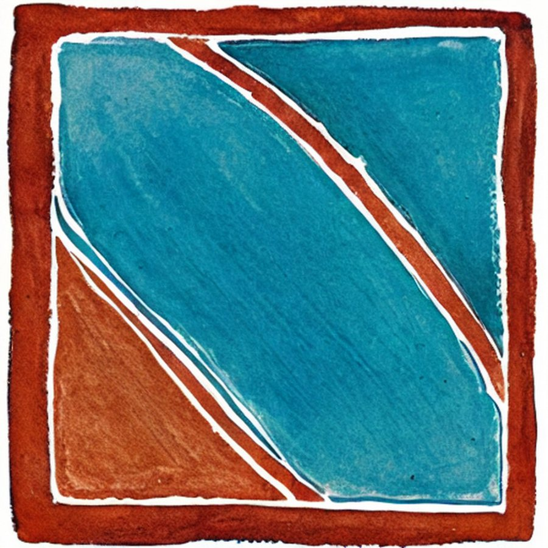
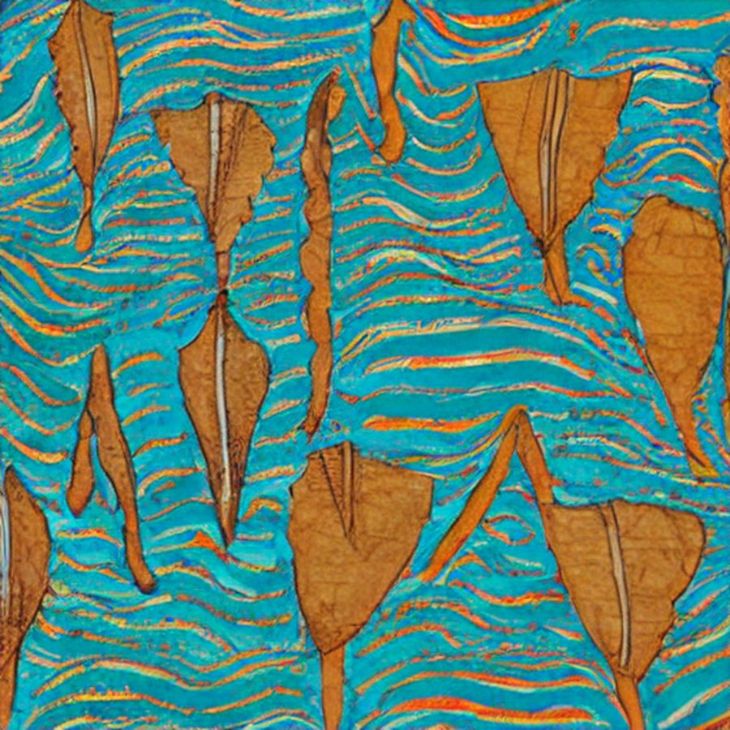
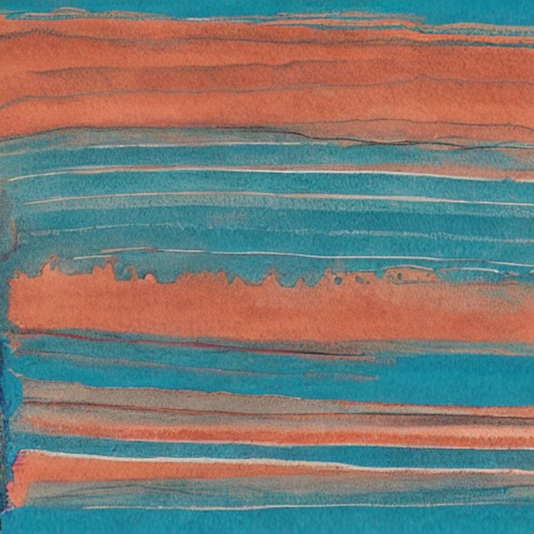
AORI is fine but thin: it does not mean anything in Greek, it has no place attached to it, and the one drawn wordmark reverses the R, which reads as a mistake rather than a decision. Five directions, all sayable in Greek and English, all attached to something real on the island.
Four families arrived, two hands each. None is production-ready — they are all sketches at 2000px with soft edges, and a mark has to be vector. Proposal: pick a direction here, I redraw it as clean SVG in the sampled palette, and the painted version stays as the "stamp" used large on packaging.
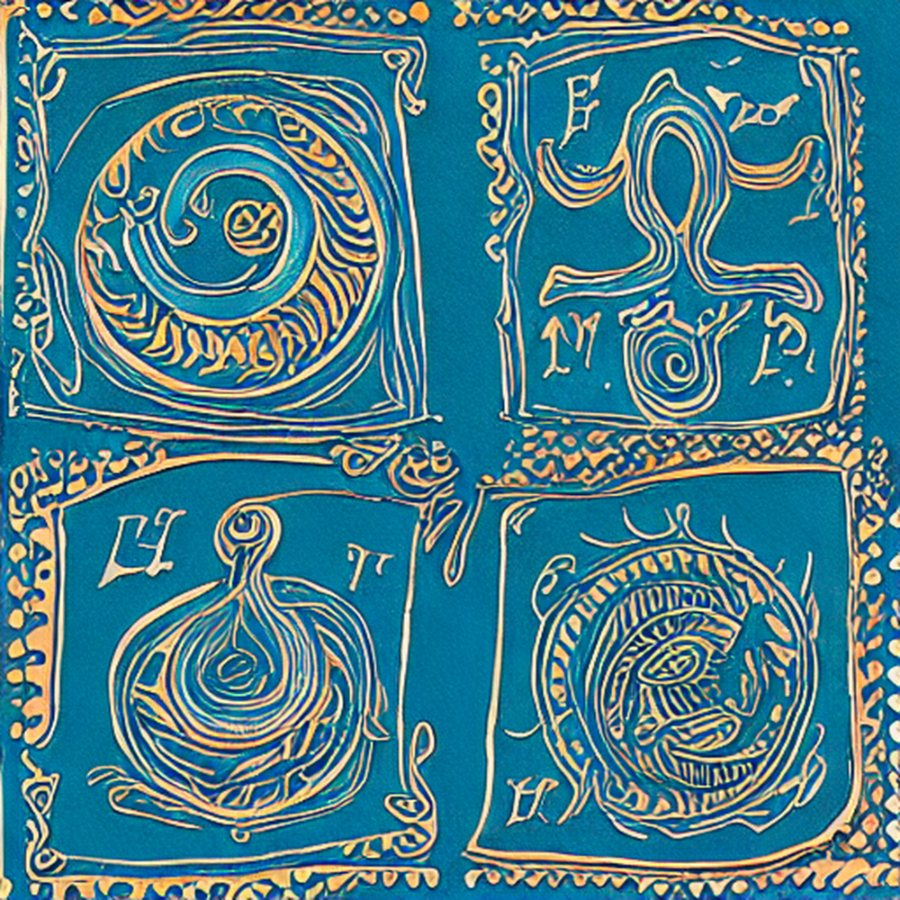
In order, and nothing before you pick.
tokens/colors.css to the sampled palette, and every specimen card with it.assets/illustrations/, assets/motifs/, assets/patterns/ under clean names, and delete the code-drawn SVGs they replace.assets/textures/ plus --surface-ledger / --pattern-* tokens at the three strengths.